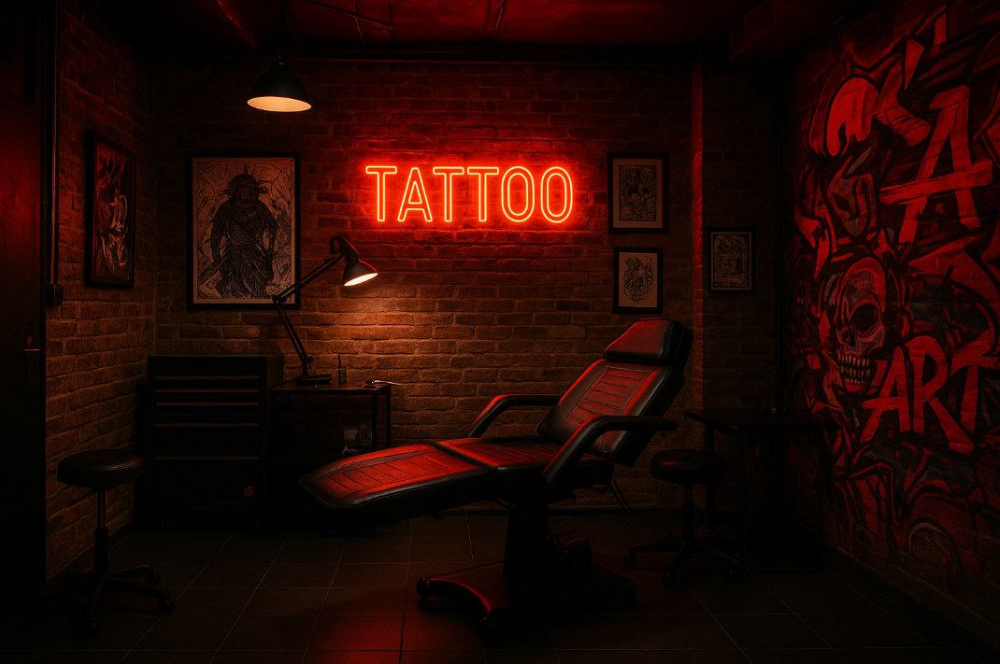

Fundado em 2012, nosso estúdio nasceu da paixão por transformar ideias e emoções em arte sobre a pele. Desde o início, acreditamos que tatuar é mais do que desenhar — é eternizar momentos, contar histórias e celebrar a individualidade de cada pessoa.
Ao longo dos anos, evoluímos junto com nossos clientes, sempre priorizando a qualidade, a higiene e o respeito por cada corpo que temos o privilégio de tatuar. Nosso espaço foi criado para oferecer conforto, segurança e inspiração — onde cada detalhe foi pensado para que você se sinta à vontade e confiante.
Trabalhamos com artistas talentosos e experientes em diferentes estilos, do realismo ao tradicional, do minimalista ao experimental. Seja sua primeira tatuagem ou mais uma peça na sua jornada, estamos aqui para garantir que cada traço carregue significado e autenticidade.
Cada tatuagem é única — feita com técnica, sensibilidade e criatividade.
Ambiente esterilizado e equipamentos de alta qualidade para sua tranquilidade.
Valorizamos cada cliente e sua história. Aqui, cada corpo é uma tela sagrada.